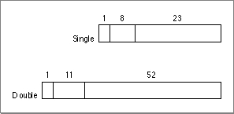

Legacy Document
Important: The information in this document is obsolete and should not be used for new development.
Important: The information in this document is obsolete and should not be used for new development.


Floating-Point Data Formats
Figure F-1 Floating-point data formats
Table F-1 Interpreting floating-point values If biased exponent e is: And fraction f is: Then value v is: And class of v is: (any) Normalized number [78] Denormalized number Zero Infinity NaN 
[77] max = 255 for single format, 2047 for double format.
[78] minexp = -126 for single format, -1022 for double format.